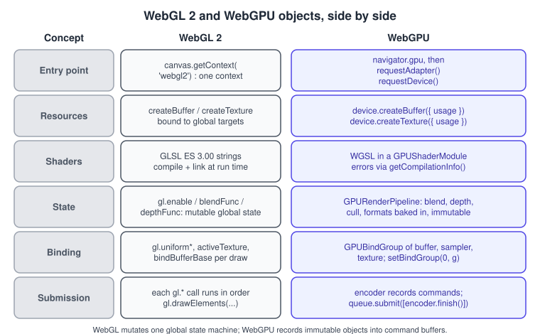
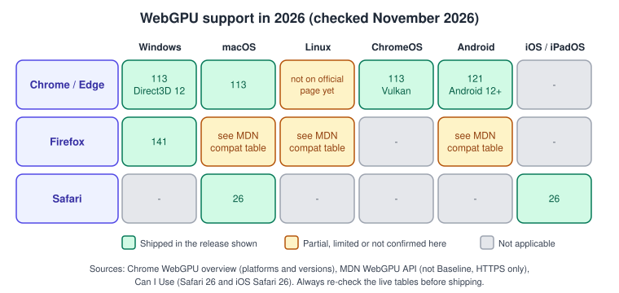
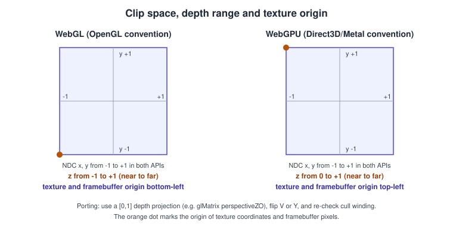
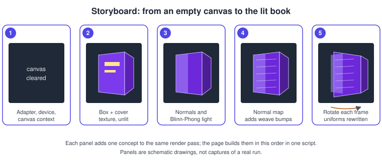
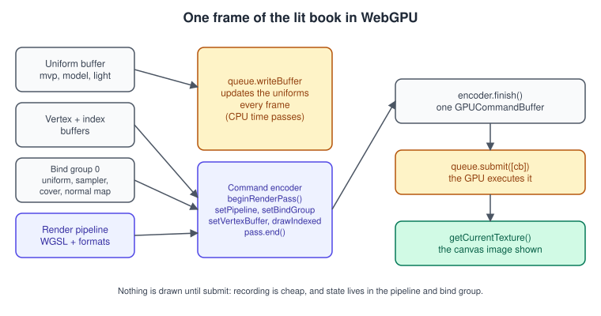

WebGPU: Overview and Comparison with WebGL
|
This content was generated with the assistance of AI and should be verified against the official documentation before being relied on in production. |
WebGPU is the web’s modern graphics and compute API. Where WebGL is a thin binding of OpenGL ES (a global state machine that the driver interprets call by call), WebGPU follows the design of Vulkan, Metal and Direct 3D 12: you create immutable objects up front (pipelines, bind groups, buffers, textures), record commands into a command buffer and submit that buffer to a queue. It adds compute shaders as a first-class feature, uses its own shading language, WGSL, and is designed to be implementable on top of all three native APIs. This page maps every WebGL concept you know to its WebGPU counterpart, compares the shading languages, lists the pitfalls that catch WebGL programmers, shows the browser support state, and renders the Bookshelf lit rotating book with raw WebGPU so that you can read the same scene in both APIs.
The facts were checked in November 2026. The documented standards are the W3C WebGPU specification (a Candidate Recommendation
Draft dated 15 September 2026) and the WebGPU Shading Language, WGSL (a Candidate Recommendation Draft dated 26 October 2026).
The code runs in any browser that exposes navigator.gpu (see the support grid below), on a secure context: HTTPS or
http://localhost for development. The API is defined for the main thread and for workers. WebGPU is not part of the Baseline set of
web features at the time of the check, so shipping code needs a fallback; for most projects that fallback is WebGL 2.
Where this page fits in the Bookshelf running example: the raw WebGL track reaches the lit rotating book in
Lighting in Shaders; this page draws the same book with WebGPU. The three.js track
ends with the switch to WebGPURenderer and a TSL material in
three.js WebGPURenderer and TSL; that page is the practical way to
use WebGPU in production, and this page explains what runs underneath. The shared asset used here is
bookshelf.glb and its textures (the cover image is bookshelf-cover.png).
Where WebGPU sits

The right-hand column of the figure is the whole story: WebGPU asks you to say what you want to do before doing it. The consequences are visible everywhere:
-
State lives in objects. Blending, depth testing, culling, the colour and depth formats and the vertex layout are baked into a
GPURenderPipeline. There is nogl.enable(gl.DEPTH_TEST)to forget; a pipeline that needs depth says so once. -
Validation happens at creation, not at draw time. The browser checks a pipeline when you create it, so the draw loop does no state checking. Errors are reported asynchronously through the device rather than by polling
gl.getError(). -
Work is recorded, then submitted. A
GPUCommandEncoderrecords passes;queue.submit()sends the finished command buffer. A command buffer can be built on a worker and reused through render bundles. -
Compute is part of the API. WebGL 2 has no compute shaders; WebGPU has compute pipelines and storage buffers.
-
Resources declare their usage. Every buffer and texture lists up front how it will be used (
VERTEX,UNIFORM,COPY_DST,TEXTURE_BINDING,RENDER_ATTACHMENT…), which lets the implementation place and validate it.
The same ideas, in other words, that are covered for native APIs in Explicit vs Implicit APIs; WebGPU is the browser’s version, with the safety checks a web page needs. The concept-by-concept map from OpenGL is in Porting from OpenGL to Vulkan, Metal and WebGPU, and the layer under both web APIs is described in Cross-platform Translation Layers.
Choosing between WebGL, three.js, Babylon.js and WebGPU
Babylon.js is another widely used open-source engine for the web that supports both WebGL and WebGPU; this site names it for completeness and does not document it. Its documentation is at https://doc.babylonjs.com/. The learning path used here is: raw WebGL 2 to understand the pipeline, three.js for real scenes, and WebGPU (this page) to understand where the platform is going. Raw WebGPU is a good fit for compute-heavy tools, renderers you want to tune completely, and for learning explicit APIs without a native toolchain. For a typical scene with loaded models, an engine is faster to build with and takes care of the fallback.
Support in 2026

The grid summarises three sources that were checked in November 2026: the Chrome developer documentation, the MDN WebGPU page and Can I Use.
-
Chrome and Edge: version 113 on Windows (Direct3D 12) and macOS, and on ChromeOS (Vulkan); version 121 on Android 12 and later with Qualcomm or ARM GPUs. The Chrome overview page still describes Linux as coming later, so the grid does not mark it as shipped; check the live pages before relying on it.
-
Firefox: version 141 on Windows. For other platforms, read the current MDN compatibility table rather than a snapshot.
-
Safari: version 26, on macOS and on iOS; Can I Use lists it as partial support for the 26.x releases. On Apple platforms Safari runs WebGPU on Metal; see the Metal sub-section.
-
MDN labels the API as not Baseline and available only in secure contexts.
Always feature-detect: navigator.gpu may be missing, requestAdapter() may resolve to null (blocklisted GPU or driver), and
requestDevice() can reject. A page needs a path for each of the three cases.
// Returns { adapter, device } or null when WebGPU is not usable.
export async function initWebGPU() {
if (!navigator.gpu) {
return null; // not exposed: old browser, insecure context, or disabled
}
const adapter = await navigator.gpu.requestAdapter({
powerPreference: "high-performance", // a hint only; "low-power" is the other value
});
if (!adapter) {
return null; // no suitable adapter (blocklist, no driver)
}
// Ask only for features you use, and only if the adapter has them.
const wanted = ["timestamp-query", "float32-filterable"];
const requiredFeatures = wanted.filter((f) => adapter.features.has(f));
const device = await adapter.requestDevice({
requiredFeatures,
requiredLimits: {}, // defaults are the guaranteed minimum limits
label: "bookshelf-device",
});
device.addEventListener("uncapturederror", (event) => {
console.error("WebGPU error:", event.error.message);
});
device.lost.then((info) => {
// reason is "destroyed" for device.destroy(), otherwise "unknown"
console.warn(`Device lost (${info.reason}): ${info.message}`);
});
return { adapter, device };
}
const gpu = await initWebGPU();
if (!gpu) {
// Fall back: WebGL 2 (see the first-triangle page) or a static message.
}Source: MDN: WebGPU API
The adapter describes a physical (or software) GPU and its features and limits; the device is the logical connection you create
resources on. The guaranteed minimum limits are the same for every implementation (for example 8192 for the largest 2D texture, four
bind groups and 65536 bytes per uniform binding); ask for more through requiredLimits only if your adapter reports it, because a
request above the adapter’s limits makes requestDevice() fail. Optional features include timestamp-query,
texture-compression-bc, texture-compression-etc2, texture-compression-astc, float32-filterable, shader-f16 and
depth-clip-control; the specification’s feature table is the authoritative list.
Concept map: WebGL to WebGPU
| Concept | WebGL 2 | WebGPU | Notes |
|---|---|---|---|
Entry |
|
|
The canvas context only presents images; the device does the work |
Presentation |
default framebuffer, |
|
The canvas texture changes every frame: get it every frame |
Buffers |
|
|
Size and usage flags are fixed at creation; |
Vertex layout |
VAO and |
|
The layout is part of the pipeline, not a bind-time object |
Textures |
|
|
No |
Samplers |
texture parameters or sampler objects |
|
Always separate from the texture, also in WGSL |
Shaders |
GLSL ES strings, compile and link |
WGSL in |
One module can hold all stages; entry points are chosen by the pipeline |
Uniforms |
|
uniform buffers in bind groups |
Struct layout follows alignment rules (see pitfalls) |
Render targets |
FBO, renderbuffer, |
a render pass with |
Load and store operations are explicit |
Draw |
|
|
Indirect draws also exist |
Compute |
not available |
|
|
Queries |
|
|
Occlusion queries are core |
Errors |
|
error scopes, |
Reported asynchronously |
Extensions |
|
|
Features are requested when the device is created |
The WebGL-specific details behind the left column are in Buffers, Attributes, Uniforms and VAOs, Textures and Samplers and Framebuffers and Render to Texture.
The coordinate conventions differ

Both APIs use normalised device coordinates from -1 to +1 for x and y, with y pointing up. The differences that break ported code are the depth range, the origin of framebuffer pixels and textures, and the handedness assumed by the maths library:
-
Depth range. WebGL and OpenGL map clip-space depth to -1 .. +1; WebGPU, like Direct 3D and Metal, maps it to 0 .. +1. A projection matrix built for OpenGL clips away the near half of the range in WebGPU, so use a matrix whose depth maps to [0, 1] (glMatrix has
perspectiveZOfor this) or the one built in the example below. For a right-handed view space looking down -z, with near plane \( n \) and far plane \( f \):
\[ z_{ ndc } = \frac{ z_{ clip } }{ w_{ clip } } = \frac{ f }{ f - n } \left( 1 - \frac{ n }{ - z_{ view } } \right) \]
which is 0 at \( z_{view} = -n \) and 1 at \( z_{view} = -f \).
* *Texture and framebuffer origin.* WebGPU's texture coordinates and framebuffer pixel coordinates start at the *top-left*. In
WebGL you set `UNPACK_FLIP_Y_WEBGL` to make an image's first row the bottom row; in WebGPU an image uploaded unchanged already
matches a UV with v pointing down, and `copyExternalImageToTexture` has a `flipY` option when you need the other way.
* *Winding and culling.* The default front face is counter-clockwise in both APIs, and `cullMode` is a pipeline property.
* *Matrix layout.* Both consume column-major matrices when you upload a `Float32Array` of 16 values, and both WGSL and GLSL
multiply with the matrix on the left.
WGSL compared with GLSL
WGSL looks like a mixture of Rust and GLSL: statically typed, no implicit conversions, no preprocessor. Entry points are marked by
attributes and a single module can contain the vertex, fragment and compute stages. Inputs and outputs use @location and
@builtin attributes instead of in, out and gl_* variables.
| Idea | GLSL ES 3.00 | WGSL |
|---|---|---|
Vector and matrix types |
|
|
Function |
|
|
Variables |
|
|
Constants and specialisation |
|
|
Conditional expression |
|
|
Vertex outputs |
|
struct fields with |
Fragment output |
|
return |
Textures |
|
|
Uniforms |
|
|
Storage buffers |
not in ES 3.00 |
|
Integer division and casts |
implicit int to float rejected for most operations |
explicit conversions such as |
Derivatives and implicit LOD |
|
|
The shader-language landscape (GLSL, HLSL, MSL, SPIR-V and WGSL) is compared on Shading Languages Landscape; the GLSL ES 1.00 and 3.00 differences are on GLSL ES 1.00 and 3.00.
The lit rotating book in WebGPU
This is Bookshelf step 3 in WebGPU: a book-shaped box with the cover texture, a procedural normal map and Blinn-Phong lighting,
rotated every frame. The geometry is built in code (a box with 24 vertices, because each face needs its own normal and tangent), so
the only external file is the cover image. Download bookshelf-cover.png from the site’s attachments
(bookshelf-cover.png), put it next to the HTML file and serve the folder
over http://localhost (for example with npx vite or python3 -m http.server); WebGPU needs a secure context and loading a
texture needs HTTP, not file://.


The procedure the code follows:
-
Get the adapter, device and canvas context and configure the context with the preferred canvas format.
-
Create the resources: vertex and index buffers (with
writeBuffer), the uniform buffer, the cover texture (sRGB format) and the normal map (linear format), a sampler and a depth texture. -
Create the shader module and the pipeline, with the vertex layout, the colour target format, back-face culling and a depth test.
-
Create the bind group that connects the uniform buffer, the sampler and the two textures to group 0.
-
Every frame: compute the matrices,
writeBufferthe uniforms, record a render pass that clears the canvas texture and the depth texture, set the pipeline, bind group and buffers,drawIndexed, end the pass, submit.

<!doctype html>
<html lang="en">
<head>
<meta charset="utf-8">
<title>Bookshelf: lit book in WebGPU</title>
<style>
html, body { margin: 0; background: #111; color: #eee; font: 14px sans-serif; }
canvas { display: block; margin: 1rem auto; width: 640px; height: 480px; }
#msg { text-align: center; }
</style>
</head>
<body>
<canvas id="gpu" width="1280" height="960"></canvas>
<p id="msg"></p>
<script type="module">
const msg = document.getElementById("msg");
if (!navigator.gpu) { msg.textContent = "WebGPU is not available in this browser."; throw new Error("no WebGPU"); }
const adapter = await navigator.gpu.requestAdapter();
if (!adapter) { msg.textContent = "No suitable GPU adapter."; throw new Error("no adapter"); }
const device = await adapter.requestDevice();
device.addEventListener("uncapturederror", (e) => console.error(e.error.message));
const canvas = document.getElementById("gpu");
const context = canvas.getContext("webgpu");
const format = navigator.gpu.getPreferredCanvasFormat(); // bgra8unorm or rgba8unorm
context.configure({ device, format, alphaMode: "opaque" });
// ---- Small column-major matrix helpers (depth range 0..1, right-handed) ----
const mul = (a, b) => {
const o = new Float32Array(16);
for (let c = 0; c < 4; c++) for (let r = 0; r < 4; r++) {
let s = 0; for (let k = 0; k < 4; k++) s += a[k * 4 + r] * b[c * 4 + k];
o[c * 4 + r] = s;
}
return o;
};
const perspective = (fovy, aspect, n, f) => {
const t = 1 / Math.tan(fovy / 2);
return new Float32Array([t / aspect, 0, 0, 0, 0, t, 0, 0, 0, 0, f / (n - f), -1, 0, 0, (n * f) / (n - f), 0]);
};
const translate = (x, y, z) => new Float32Array([1, 0, 0, 0, 0, 1, 0, 0, 0, 0, 1, 0, x, y, z, 1]);
const rotY = (a) => { const c = Math.cos(a), s = Math.sin(a); return new Float32Array([c, 0, -s, 0, 0, 1, 0, 0, s, 0, c, 0, 0, 0, 0, 1]); };
const rotX = (a) => { const c = Math.cos(a), s = Math.sin(a); return new Float32Array([1, 0, 0, 0, 0, c, s, 0, 0, -s, c, 0, 0, 0, 0, 1]); };
// ---- Box geometry: 24 vertices, each = position(3) normal(3) tangent(3) uv(2) ----
const half = [0.5, 0.7, 0.15]; // a book: 1.0 wide, 1.4 tall, 0.3 thick
const faces = [ // [normal, u axis (texture right), v axis (texture up)]
[[0, 0, 1], [1, 0, 0], [0, 1, 0]], [[0, 0, -1], [-1, 0, 0], [0, 1, 0]],
[[1, 0, 0], [0, 0, -1], [0, 1, 0]], [[-1, 0, 0], [0, 0, 1], [0, 1, 0]],
[[0, 1, 0], [1, 0, 0], [0, 0, -1]], [[0, -1, 0], [1, 0, 0], [0, 0, 1]],
];
const verts = [], idx = [];
faces.forEach(([n, u, v], i) => {
for (const [su, sv] of [[-1, -1], [1, -1], [-1, 1], [1, 1]]) {
const p = [0, 1, 2].map((k) => n[k] * half[k] + su * u[k] * half[k] + sv * v[k] * half[k]);
verts.push(...p, ...n, ...u, (su + 1) / 2, (1 - sv) / 2);
}
const b = i * 4;
idx.push(b, b + 1, b + 2, b + 2, b + 1, b + 3);
});
const vertexData = new Float32Array(verts);
const indexData = new Uint16Array(idx);
const vertexBuffer = device.createBuffer({ size: vertexData.byteLength, usage: GPUBufferUsage.VERTEX | GPUBufferUsage.COPY_DST });
device.queue.writeBuffer(vertexBuffer, 0, vertexData);
const indexBuffer = device.createBuffer({ size: indexData.byteLength, usage: GPUBufferUsage.INDEX | GPUBufferUsage.COPY_DST });
device.queue.writeBuffer(indexBuffer, 0, indexData);
// ---- Uniforms: mvp (64 B) + model (64 B) + light (16 B) + camera (16 B) = 160 B ----
const uniformData = new Float32Array(40);
const uniformBuffer = device.createBuffer({ size: uniformData.byteLength, usage: GPUBufferUsage.UNIFORM | GPUBufferUsage.COPY_DST });
// ---- Textures: cover from a PNG (sRGB), normal map generated in code (linear) ----
const blob = await (await fetch("bookshelf-cover.png")).blob();
const bitmap = await createImageBitmap(blob, { colorSpaceConversion: "none" });
const coverTexture = device.createTexture({
size: [bitmap.width, bitmap.height],
format: "rgba8unorm-srgb", // sampled values arrive already linear
usage: GPUTextureUsage.TEXTURE_BINDING | GPUTextureUsage.COPY_DST | GPUTextureUsage.RENDER_ATTACHMENT,
});
device.queue.copyExternalImageToTexture({ source: bitmap }, { texture: coverTexture }, [bitmap.width, bitmap.height]);
const N = 256, normalPixels = new Uint8Array(N * N * 4), w = (2 * Math.PI) / 16;
for (let y = 0; y < N; y++) for (let x = 0; x < N; x++) { // a cloth-weave bump pattern
const hx = Math.cos(x * w) * Math.sin(y * w) * 0.35, hy = Math.sin(x * w) * Math.cos(y * w) * 0.35;
const len = Math.hypot(hx, hy, 1), o = (y * N + x) * 4;
normalPixels.set([(-hx / len * 0.5 + 0.5) * 255, (hy / len * 0.5 + 0.5) * 255, (1 / len * 0.5 + 0.5) * 255, 255], o);
}
const normalTexture = device.createTexture({
size: [N, N], format: "rgba8unorm", // linear data, not sRGB
usage: GPUTextureUsage.TEXTURE_BINDING | GPUTextureUsage.COPY_DST,
});
device.queue.writeTexture({ texture: normalTexture }, normalPixels, { bytesPerRow: N * 4 }, [N, N]);
const sampler = device.createSampler({ magFilter: "linear", minFilter: "linear", addressModeU: "repeat", addressModeV: "repeat" });
const depthTexture = device.createTexture({ size: [canvas.width, canvas.height], format: "depth24plus", usage: GPUTextureUsage.RENDER_ATTACHMENT });
// ---- WGSL: vertex and fragment stages in one module ----
const shader = device.createShaderModule({ label: "book", code: /* wgsl */ `
struct Uniforms { mvp: mat4x4f, model: mat4x4f, lightPos: vec4f, cameraPos: vec4f };
@group(0) @binding(0) var<uniform> u: Uniforms;
@group(0) @binding(1) var samp: sampler;
@group(0) @binding(2) var coverMap: texture_2d<f32>;
@group(0) @binding(3) var normalMap: texture_2d<f32>;
struct VSOut {
@builtin(position) pos: vec4f,
@location(0) worldPos: vec3f,
@location(1) normal: vec3f,
@location(2) tangent: vec3f,
@location(3) uv: vec2f,
};
@vertex fn vs(@location(0) position: vec3f, @location(1) normal: vec3f,
@location(2) tangent: vec3f, @location(3) uv: vec2f) -> VSOut {
var o: VSOut;
o.pos = u.mvp * vec4f(position, 1.0);
o.worldPos = (u.model * vec4f(position, 1.0)).xyz;
o.normal = (u.model * vec4f(normal, 0.0)).xyz; // rotation only: no inverse transpose needed
o.tangent = (u.model * vec4f(tangent, 0.0)).xyz;
o.uv = uv;
return o;
}
@fragment fn fs(v: VSOut) -> @location(0) vec4f {
let n0 = normalize(v.normal);
let t = normalize(v.tangent - n0 * dot(v.tangent, n0));
let b = cross(n0, t);
let tn = textureSample(normalMap, samp, v.uv).xyz * 2.0 - 1.0;
let n = normalize(mat3x3f(t, b, n0) * tn); // tangent space to world space
let albedo = textureSample(coverMap, samp, v.uv).rgb; // linear, thanks to the sRGB format
let l = normalize(u.lightPos.xyz - v.worldPos);
let view = normalize(u.cameraPos.xyz - v.worldPos);
let h = normalize(l + view);
let diff = max(dot(n, l), 0.0);
let spec = select(0.0, pow(max(dot(n, h), 0.0), 48.0), dot(n0, l) > 0.0);
let lit = albedo * (0.10 + diff * vec3f(1.0, 0.94, 0.82)) + vec3f(0.35) * spec;
return vec4f(pow(lit, vec3f(1.0 / 2.2)), 1.0); // the canvas format is not sRGB
}` });
const pipeline = device.createRenderPipeline({
label: "book pipeline",
layout: "auto",
vertex: {
module: shader, entryPoint: "vs",
buffers: [{
arrayStride: 44, // 11 floats
attributes: [
{ shaderLocation: 0, offset: 0, format: "float32x3" },
{ shaderLocation: 1, offset: 12, format: "float32x3" },
{ shaderLocation: 2, offset: 24, format: "float32x3" },
{ shaderLocation: 3, offset: 36, format: "float32x2" },
],
}],
},
fragment: { module: shader, entryPoint: "fs", targets: [{ format }] },
primitive: { topology: "triangle-list", cullMode: "back", frontFace: "ccw" },
depthStencil: { format: "depth24plus", depthWriteEnabled: true, depthCompare: "less" },
});
const bindGroup = device.createBindGroup({
layout: pipeline.getBindGroupLayout(0),
entries: [
{ binding: 0, resource: { buffer: uniformBuffer } },
{ binding: 1, resource: sampler },
{ binding: 2, resource: coverTexture.createView() },
{ binding: 3, resource: normalTexture.createView() },
],
});
const proj = perspective(Math.PI / 4, canvas.width / canvas.height, 0.1, 50);
const view = translate(0, 0, -3.2);
function frame(ms) {
const model = mul(rotY(ms / 1000 * 0.8), rotX(0.35));
uniformData.set(mul(proj, mul(view, model)), 0);
uniformData.set(model, 16);
uniformData.set([2, 2, 3, 1], 32); // desk lamp, world space
uniformData.set([0, 0, 3.2, 1], 36); // camera, world space
device.queue.writeBuffer(uniformBuffer, 0, uniformData);
const encoder = device.createCommandEncoder();
const pass = encoder.beginRenderPass({
colorAttachments: [{
view: context.getCurrentTexture().createView(),
clearValue: { r: 0.07, g: 0.07, b: 0.1, a: 1 }, loadOp: "clear", storeOp: "store",
}],
depthStencilAttachment: { view: depthTexture.createView(), depthClearValue: 1, depthLoadOp: "clear", depthStoreOp: "store" },
});
pass.setPipeline(pipeline);
pass.setBindGroup(0, bindGroup);
pass.setVertexBuffer(0, vertexBuffer);
pass.setIndexBuffer(indexBuffer, "uint16");
pass.drawIndexed(indexData.length);
pass.end();
device.queue.submit([encoder.finish()]);
requestAnimationFrame(frame);
}
requestAnimationFrame(frame);
</script>
</body>
</html>Source: WebGPU Samples (the rotating cube and normal-mapping samples), MDN: GPUCanvasContext.configure()
What each part does, and the options it takes:
-
context.configure()takesdeviceandformat(required),alphaMode(opaqueby default, orpremultipliedto composite the canvas with the page),usage(defaultRENDER_ATTACHMENT; addCOPY_SRCto read the image back, and keepRENDER_ATTACHMENTin the list when you set it),colorSpace(srgbordisplay-p3) andtoneMappingfor HDR output.getPreferredCanvasFormat()returnsbgra8unormorrgba8unorm, whichever the platform presents fastest. Neither is an sRGB format, so the shader applies the gamma curve itself; you can instead list the matching-srgbformat inviewFormatsand render to a view of that format. -
Buffer
usageis a bit mask:VERTEX,INDEX,UNIFORM,STORAGE,INDIRECT,COPY_SRC,COPY_DST,MAP_READ,MAP_WRITE,QUERY_RESOLVE. Only the flags you list are allowed; using a buffer in a way it was not created for is a validation error. -
Texture formats and colour. The cover is created as
rgba8unorm-srgb, so sampling converts it to linear for the lighting math, exactly likeSRGB8_ALPHA8in WebGL 2. The normal map holds vectors, not colours, so it must bergba8unorm. -
Vertex buffer layout replaces the VAO.
arrayStrideis the bytes per vertex (11 floats, 44 bytes); each attribute has ashaderLocationthat matches the@locationin WGSL, anoffsetand aformatsuch asfloat32x3. -
layout: "auto"lets the pipeline derive its bind group layout from the shader, andgetBindGroupLayout(0)returns it. This is convenient for examples; production code creates explicit layouts withcreateBindGroupLayoutandcreatePipelineLayoutso that one bind group can be shared between pipelines. -
depthStencillists the depth format, whether the pass writes depth and the comparison; the render pass must provide a depth attachment of the same format. -
Load and store operations.
loadOpisclearorload,storeOpisstoreordiscard. WebGL 2 hides this decision (it hasinvalidateFramebufferfor tilers); in WebGPU,discardon a depth buffer you do not read later saves bandwidth on mobile GPUs.
Pitfalls when porting the book from WebGL
-
Uniform alignment. WGSL places a
vec3fon a 16-byte boundary, so a struct such asstruct S { a: vec3f, b: f32 }is 16 bytes, but twovec3fmembers are 32. The example avoids the trap by usingvec4ffor the light and camera positions. Compare with the std140 rules in Buffers, Attributes, Uniforms and VAOs; they are the same idea. -
Upload destination usage.
copyExternalImageToTextureneeds the destination texture to have bothCOPY_DSTandRENDER_ATTACHMENT; forgetting the second one is the most frequent first error. The error appears in the console through theuncapturederrorlistener, not as an exception at the call. -
No automatic mipmaps. Without
mipLevelCountand generated levels, a minified cover shimmers. Generate the chain with a small render pass or compute pass (the WebGPU samples include a helper) or use a pre-built KTX2 file; see Textures, Sampling and Mipmaps for the theory. -
textureSamplein non-uniform control flow is rejected by the shader compiler. Sample before the branch, or usetextureSampleLevelinside it. -
Recreate the depth texture on resize. The canvas size and the depth texture size must match; a
ResizeObserverhandler setscanvas.widthandcanvas.heightand creates a new depth texture. -
Submit order matters, object lifetime does not. A destroyed resource used by a submitted command buffer is an error; JavaScript garbage collection frees unreferenced objects, and
destroy()frees GPU memory early (do this for big textures).
Errors, validation and device loss
WebGL reports errors with getError() after the fact. WebGPU never throws for GPU mistakes; instead each device keeps a stack of
error scopes, and errors that no scope catches reach the uncapturederror event. Use the scopes around code that is likely to
fail, such as loading user content.
device.pushErrorScope("validation");
device.pushErrorScope("out-of-memory");
const big = device.createTexture({
size: [16384, 16384], format: "rgba8unorm",
usage: GPUTextureUsage.TEXTURE_BINDING | GPUTextureUsage.COPY_DST,
});
const oom = await device.popErrorScope(); // innermost scope first
const validation = await device.popErrorScope();
if (oom) console.warn("Out of memory:", oom.message);
if (validation) console.warn("Validation:", validation.message);
// Shader errors have their own channel:
const info = await shader.getCompilationInfo();
for (const m of info.messages) {
console.log(`${m.type} line ${m.lineNum}: ${m.message}`);
}Source: MDN: GPUDevice.pushErrorScope()
The scope filters are validation, out-of-memory and internal. A lost device (driver reset, GPU removed, device.destroy())
resolves the device.lost promise once; there is no restore event. Recovery means requesting a new adapter and device and
recreating every resource, which is the same work that WebGL context loss asks for. Structure the code so that scene creation is a
function you can call again, as described in
Context Loss and Robustness.
Compute shaders and reading data back
Compute is the biggest new capability for web developers. A compute pipeline runs a WGSL function over a grid of workgroups and reads or writes storage buffers and textures; WebGL 2 programmers emulated this with transform feedback or render-to-texture tricks. The example doubles an array on the GPU and reads the result back.
const device = (await (await navigator.gpu.requestAdapter()).requestDevice());
const input = new Float32Array([1, 2, 3, 4, 5, 6, 7, 8]);
const storage = device.createBuffer({
size: input.byteLength,
usage: GPUBufferUsage.STORAGE | GPUBufferUsage.COPY_SRC | GPUBufferUsage.COPY_DST,
});
const readback = device.createBuffer({
size: input.byteLength,
usage: GPUBufferUsage.MAP_READ | GPUBufferUsage.COPY_DST, // mappable buffers can only copy
});
device.queue.writeBuffer(storage, 0, input);
const module = device.createShaderModule({ code: /* wgsl */ `
@group(0) @binding(0) var<storage, read_write> data: array<f32>;
@compute @workgroup_size(64)
fn main(@builtin(global_invocation_id) id: vec3u) {
if (id.x < arrayLength(&data)) {
data[id.x] = data[id.x] * 2.0;
}
}` });
const pipeline = device.createComputePipeline({
layout: "auto",
compute: { module, entryPoint: "main" },
});
const bindGroup = device.createBindGroup({
layout: pipeline.getBindGroupLayout(0),
entries: [{ binding: 0, resource: { buffer: storage } }],
});
const encoder = device.createCommandEncoder();
const pass = encoder.beginComputePass();
pass.setPipeline(pipeline);
pass.setBindGroup(0, bindGroup);
pass.dispatchWorkgroups(Math.ceil(input.length / 64)); // 64 invocations per workgroup
pass.end();
encoder.copyBufferToBuffer(storage, 0, readback, 0, input.byteLength);
device.queue.submit([encoder.finish()]);
await readback.mapAsync(GPUMapMode.READ); // resolves when the GPU is done
const result = new Float32Array(readback.getMappedRange().slice(0));
readback.unmap();
console.log(result); // Float32Array [2, 4, 6, 8, 10, 12, 14, 16]Source: MDN: GPUComputePassEncoder and WebGPU Samples
Three details are worth remembering. The workgroup size is limited (the guaranteed minimum is 256 invocations per workgroup), so
big problems use many workgroups. The readback is asynchronous and the call to mapAsync is the synchronisation point; do not
read back every frame, because that stalls the pipeline just as readPixels does in WebGL. A buffer with MAP_READ can only be a
copy destination, which is why the example copies into a second buffer. Machine-learning inference in the browser (see
Hugging Face on the Web and Cross-platform) and GPU particle systems such as the
Bookshelf dust use exactly this pattern. Compute pipelines for Rust and WebAssembly programs are discussed on
Rust and WebAssembly.
The same draw in both APIs
The two snippets draw one indexed mesh with one texture; they show where the work moves from draw time to creation time.
// WebGL 2: state set every frame, in order
gl.useProgram(program);
gl.bindVertexArray(vao);
gl.enable(gl.DEPTH_TEST);
gl.enable(gl.CULL_FACE);
gl.activeTexture(gl.TEXTURE0);
gl.bindTexture(gl.TEXTURE_2D, coverTexture);
gl.uniformMatrix4fv(uMvp, false, mvp);
gl.drawElements(gl.TRIANGLES, indexCount, gl.UNSIGNED_SHORT, 0);
// WebGPU: state was set once in the pipeline and bind group
pass.setPipeline(pipeline);
pass.setBindGroup(0, bindGroup); // uniforms + texture + sampler
pass.setVertexBuffer(0, vertexBuffer); // layout is part of the pipeline
pass.setIndexBuffer(indexBuffer, "uint16");
pass.drawIndexed(indexCount);The WebGL 2 version also needs the bound program’s uniform locations and a current framebuffer, which the snippet leaves out. The full WebGL equivalent of the book is built step by step in First Triangle in WebGL 2 and Lighting in Shaders.
Performance notes
-
Create pipelines early. Compilation is the expensive part.
createRenderPipelineAsync()returns a promise and does not block the main thread; WebGL’s equivalent is theKHR_parallel_shader_compileextension, see Extensions. -
Reuse bind groups and pipelines; allocate nothing per frame. The per-frame cost should be one
writeBuffer, one encoder and onesubmit. Many objects can share one big uniform or storage buffer with dynamic offsets. -
Render bundles (
GPURenderBundleEncoder) record a list of draw commands once and replay it cheaply, which suits static scenery such as the shelf. -
Batch submissions. Submit once per frame rather than once per object, and keep
mapAsyncreadbacks out of the hot path. -
Request only the limits and features you use. Asking for the adapter’s maximum limits can change where the browser puts allocations.
-
Measure with timestamps. With the
timestamp-queryfeature, aGPUQuerySetrecords GPU time per pass; the browser’s developer tools and the Chrome developer documentation describe the available inspectors. The WebGL counterparts are in Performance and Debugging. -
Workers.
navigator.gpuis also available in workers, so command recording andOffscreenCanvasrendering can leave the main thread; see OffscreenCanvas and Workers.
WebGPU through three.js
Most projects meet WebGPU through a library. In three.js the renderer is imported from three/webgpu, awaited with init(), and
falls back to a WebGL 2 backend where WebGPU is missing; materials are written with the node system (TSL), which compiles to WGSL or
GLSL. ShaderMaterial, onBeforeCompile and EffectComposer belong to WebGLRenderer only. The Bookshelf three.js track makes
this switch in three.js WebGPURenderer and TSL; the WebGL-path
custom shaders are in three.js Custom Shaders in GLSL.
import * as THREE from "three/webgpu";
const renderer = new THREE.WebGPURenderer({ antialias: true });
await renderer.init(); // picks WebGPU, or the WebGL 2 backend as a fallback
renderer.setSize(innerWidth, innerHeight);
document.body.appendChild(renderer.domElement);
const scene = new THREE.Scene();
const camera = new THREE.PerspectiveCamera(45, innerWidth / innerHeight, 0.1, 50);
camera.position.z = 3.2;
const book = new THREE.Mesh(new THREE.BoxGeometry(1, 1.4, 0.3), new THREE.MeshStandardNodeMaterial({ color: 0x6d28d9 }));
scene.add(book, new THREE.DirectionalLight(0xffffff, 2));
renderer.setAnimationLoop((t) => {
book.rotation.y = t / 1000;
renderer.render(scene, camera);
});Source: three.js manual: WebGPURenderer
Where the books are outdated
None of the three books for this sub-section covers WebGPU or WGSL, so nothing here derives from them; the table lists the statements that a reader of the books should update when WebGPU comes into the picture.
| Book | What the book says or assumes | State in 2026 |
|---|---|---|
Parisi, WebGL: Up and Running (2012) |
WebGL 1.0 on OpenGL ES 2.0 is the only way to hardware 3D in the browser |
WebGL 2 is available in all evergreen browsers; WebGPU is the successor API, shipped in Chrome and Edge, Firefox (Windows) and Safari 26 |
Dirksen, Learning Three.js, 2nd edition (2015) |
|
|
Dirksen, Three.js Cookbook (2015) |
Same renderer pair, and post-processing only through |
|
The detailed old-to-new list for three.js APIs is in What Changed Since Older Guides. The general comparison of APIs and engines is in Comparison and Graphics APIs vs Game Engines.
See it in: the OpenGL side of the same concepts is in Porting from OpenGL to Vulkan, Metal and WebGPU and OpenGL and WebGL; the browser quick start is Canvas and WebGL in the Browser.
References
-
W3C: WebGPU (Candidate Recommendation Draft, 15 September 2026)
-
W3C: WebGPU Shading Language (Candidate Recommendation Draft, 26 October 2026)
-
MDN: WebGPU API
-
Chrome for Developers: WebGPU overview
-
WebGPU Samples: webgpu.github.io/webgpu-samples
-
Can I Use: WebGPU
-
three.js manual: WebGPURenderer
-
Babylon.js documentation (named only): doc.babylonjs.com
-
O’Reilly: Tony Parisi, WebGL: Up and Running